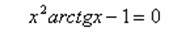

Завдання 1
Побудувати в математичному пакеті графік функції f(x) та приблизно визначити один із коренів рівняння. Розв’язати рівняння методами ітерацій, дихотомії, Ньютона з точністю ε=10^-4:

X1:
X2: